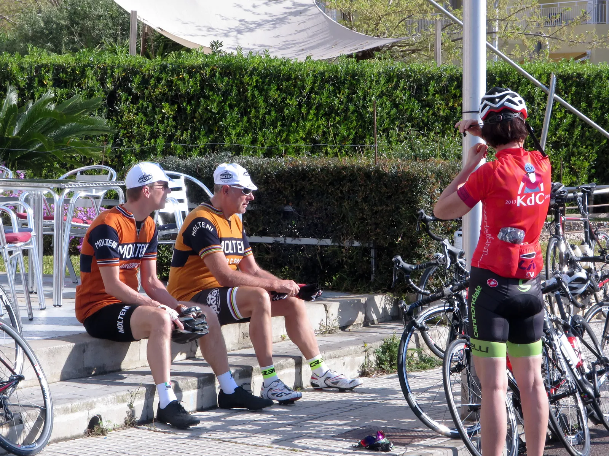
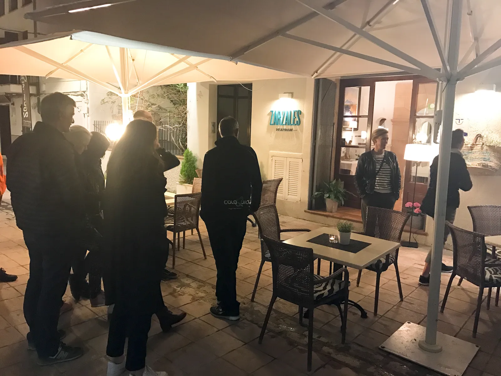

Træningslejr Mallorca 4/5: Formentor og Tapas?

Det er fjerde dag af træningslejren, og der bliver improviseret på ruteplanlægningsmødet, der foregår på en lokal cykecafé (læs om første dag, anden dag og tredje dag). Se galleriet i bunden.
Træningsrute: Col de Femenia – Formentor – Purto Pollensa. 80 km. 1100 hm.
Benene var hos mange ryttere ved at være lidt trætte, og det var hovederne nok også. Afgangen gik fra Pro Cycle Hire. En fantastisk cykelcafé der udlejer Colnago Master cykler, og har flere vidunderlige klenodier i butikken. Bl.a. en orange Molteni Colnago.
Ruten improviseres
Ved afgang var det endnu ikke besluttet, hvor turen skulle gå hen. Kaptajnen og løjtnanten tog et kig på kortet i vinduet, og valgte en bjergtop. Ud af Puerto Pollensa og til højre. Vejrudsigten så rå ud, så der var enighed om at blive forholdsvis tæt på HQ.

Det højre sving blev aldrig fundet, og det gav endnu en opkørsel af Col de Femenia. Her vendte cyklerne 180 grader, og så gik turen mod Cap de Formentor. Spidsen af den smukke halvø, og hjemsted for fyrtårnet.
På Mallorca er det kendt som “Vindenes mødested”.
Formentor levede op til sit ry
Grane og Niels kørte i forvejen, Eigil, Tina og Lisbeth kørte efter, men Kasper, Maria og Per kørte hjem for at hvile benene.
Halvøen levede op til sit navn, og vindstød og regn gjorde det svært at nå længere end halvvejs. Der ligger dog en smuk strand, som de fem kunne nyde, før de hver i sær vendte næsen hjemad.
Tapas uden tapas
Det er vigtigt at tage sig af sine nærmeste, selvom man er på træningslejr. Der var et ønske fra det medbragte påhæng om at udskifte pizza og lys øl med tapas denne aften.

– Den tredje tapas-restaurant faldt i god jord, og der blev bestilt bord. Man skal ikke altid hænge sig for meget i, hvad det modsatte køn siger, men hvad de mener, udtaler en reflekterende kaptajn Niels Bjørnsteen
Aftensmad: Paella og lys øl.